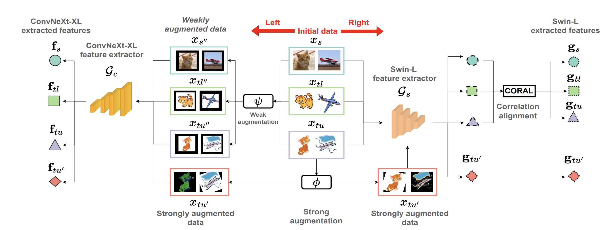

|
Saurabh Kumar Jain I'm a M.S.(By Research) scholar in the department of CSE at IIT Madras . I work in the area of Computer Vision and Machine Learning. My research primarily focusses on data efficient learning and domain adaptation. Currently, I am also working on expanding my knowledge in Large Vision Models and Generative AI. I completed my B.E. in Information Technology from M.B.M. University in 2021. Email / Google Scholar / CV / Github / linkedIn |
{kind=link}
NewsOctober 2023- One paper got accepted as ORAL presentation in WACV 2024. June 2023- Awarded Travel Grant of 1400 USD from CVPR to present my research work in CVPR 2023. (Proof) May 2023- One paper got accepted as ORAL presentation in CVPR Workshops 2023. Aug 2021- Joined IIT Madras for pursuing M.S. (By Research) in the department of Computer Science and Engineering. July 2021- Graduated from M.B.M University and awarded University Gold Medal. (Proof) July 2021- Our team got selected in 2020 ICPC Asia Amritapuri Doublesite Regional Contest. (Proof) March 2021- Secured All India Rank 426 in GATE CSE 2021 out of 101922 candidates. (Proof) August 2017- Joined M.B.M Univesity for pursuing B.E. in Information Technology. |
Research |
Stochastic Binary Network for Universal Domain AdaptationSaurabh Kumar Jain, Sukhendu Das Winter Conference on Applications of Computer Vision, 2024 Paper / Video We approach the Universal Domain Adaptation problem from a novel perspective by treating classifier weight as a distribution rather than a point weight vector for learning a generalized classifier and gained a significant boost of 8.5% in H-score on the large-scale VisDA dataset. |
|
|  |
MARRS: Modern Backbones Assisted Co-training for Rapid and Robust Semi-Supervised Domain AdaptationSaurabh Kumar Jain, Sukhendu Das Computer Vision and Pattern Recognition Workshops, 2023 Paper We show the benefits of using modern backbones in Semi-Supervised Domain adaptation and designed a framework using novel diversity module and co-training that achieves state-of-the-art results across three benchmark datasets in a 7 to 9 times lesser time. |
Projects |
Developing Semi-Supervised Detection Models to work under Clutter and Multiple instancesSaurabh Kumar Jain, Shovakar Bhattacharjee Jan 2022 - July 2022 Github / Technical Report We propose a novel object detection dataset with a vision to boost the performance of object detection methods under cluttered scenes and scenes with multiple instances of objects. We further developed a data efficient semi-supervised model that achieves map@0.5 of 0.77 using only 80% of labeled data. |
|
Transliteration SystemSaurabh Kumar Jain, Praveen SV Jan 2022 - July 2022 Github / Technical Report We implement a Seq2Seq model using different recurrent cells such as RNN, LSTM, and GRU on Dakshina dataset. We further boost their performance by 7% through integrating an attention mechanism. |
|
Multiclass Image Classification using CNNsSaurabh Kumar Jain, Praveen SV Jan 2022 - July 2022 Github / Technical Report We explore different hyperparameters, initializations, and data augmentation techniques while building CNN and apply guided backpropagation to visualize the part of the image that excites certain neurons of a layer. |
|
A Neural Network from ScratchSaurabh Kumar Jain, Praveen SV Jan 2022 - July 2022 Github / Technical Report We implement a feed-forward neural network from scratch without using any high-level libraries and perform comparison among different optimizers, activation functions, and loss functions using parallel coordinates plot and summary correlation of wandb tool. |
|
Development of Adversarial Images to prove the Null Hypothesis on DL systemsSaurabh Kumar Jain, Praveen SV Aug 2021 - Dec 2021 Technical Report We study the novel methods of creating adversarial examples by adding imperceptible noise to the original images and improve their attack success rate by more than 20% through iterating the perturbation process and by using better optimization techniques. |
|
Gene Expression Data ContestSaurabh Kumar Jain, Rahul Kumar Aug 2021 - Dec 2021 Technical Report We perform exploratory data analysis to get insights about the given gene expression dataset and then examine the effectiveness of various classifiers such as SVM, Naive Bayes, Random Forest, and Adaptive Boosting. We finally achieved mean accuracy of 83 % by building 6 supervised models to predict six clinical descriptors. |
|
MySQL Assisted Attendance System using Facial RecognitionSaurabh Kumar Jain, Suresh Kumar, Rajat Yadav Jan 2021 - Aug 2021 Github / Technical Report We develop a GUI-based attendance system using Tkinter and HOG to take student's attendance via webcam and use the MySQL connector to link the GUI app with the MySQL database for storing students data. |
|

|
Handwritten Digit Recognition SystemSaurabh Kumar Jain, Jatin Sharma June 2019 - July 2019 We built a handwritten digit recognition system using CNN and image preprocessing techniques for automating the process of inputting student marks from mark sheets into Excel. |
|
Design and source code from Jon Barron's website |